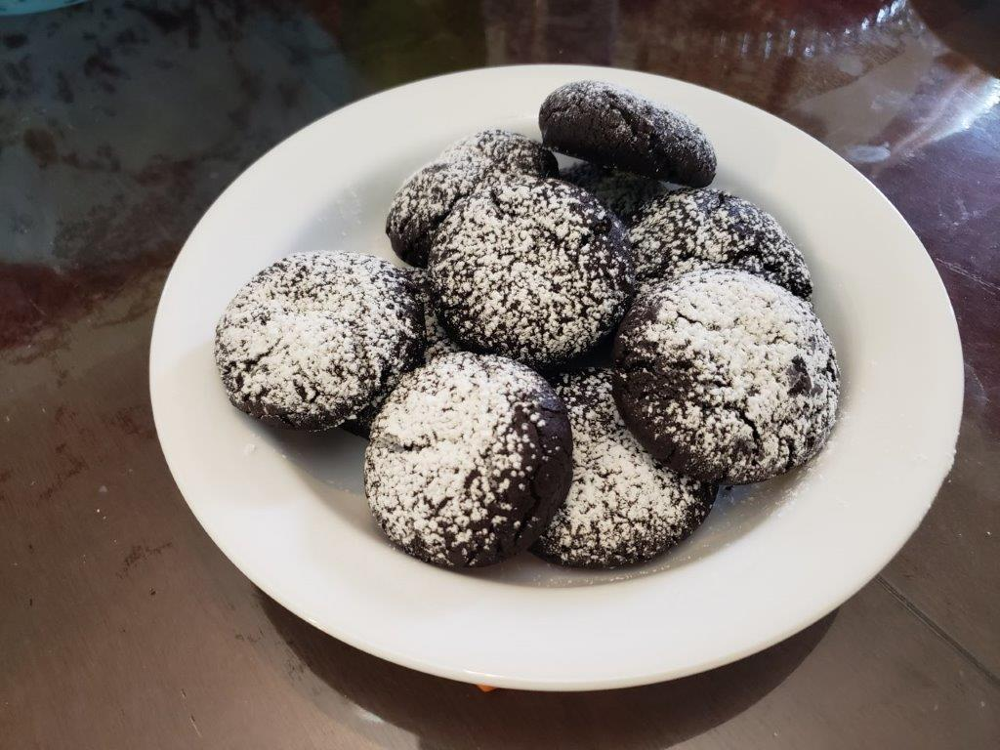

Wild Bergamot Chocolate Cookies

Ingredients:
Wild Bergamot Sugar:
- 1 - 1 1/2 cup Monarda fistulosa tips (leaves and tender stems)
- 3/4 cup White sugar
Cookies:
- 3/4 cup Brown sugar
- 1 1/4 cups Unsalted butter, cubed and at room temperature
- 2 Eggs
- 1 3/4 cups Flour
- 1 1/4 cups Cocoa powder
- 2 tsp Baking soda
- 1/4 cup Powdered sugar
Instructions:
- For the bergamot sugar, grind the two ingredients together coarsely in a food processor, until the sugar turns green and there are no more visible plant pieces.
- In a very large bowl, cream together the butter, bergamot sugar, and brown sugar. Then, beat in the eggs.
- Into a separate large bowl, sift the flour and cocoa powder. Add the baking soda and mix to combine.
- Gradually and slowly mix the dry ingredients into the wet ingredients, until well incorporated.
- Seal the dough with saran wrap and let chill in fridge for 30 minutes.
- Form the dough into 1 1/2-inch balls with your hands. Place the dough balls on a baking sheet lined with parchment paper, about 1 inch apart.
- Bake at 350 degrees Fahrenheit for 5 minutes. Then rotate the tray and bake for another 3-5 minutes.
- Remove from the oven and sift the powdered sugar over the cookies to gently dust.